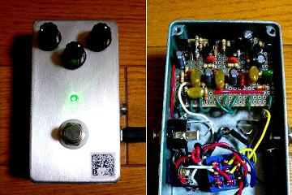
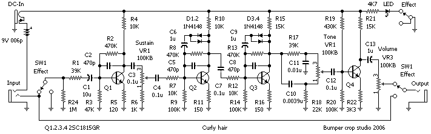
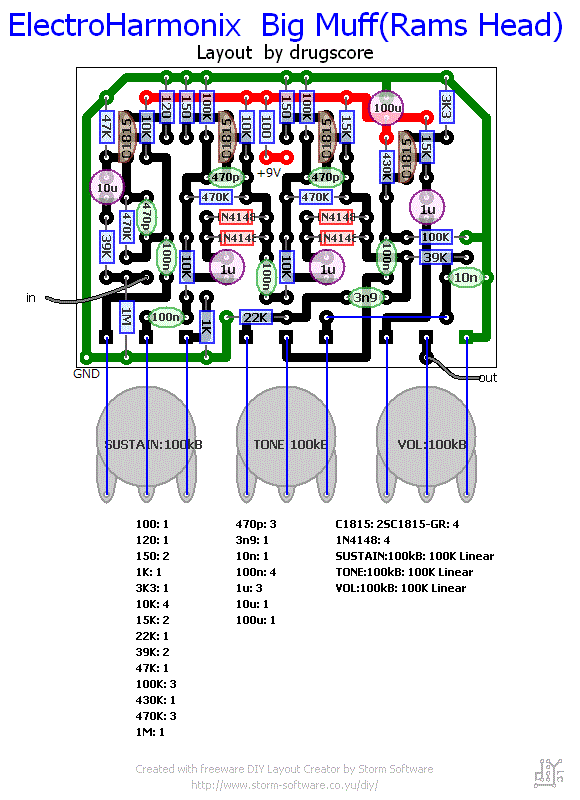
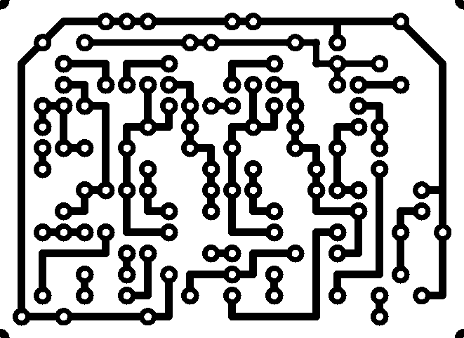

Electro Harmonix Big Muff(Ram's Head)
2008年07月19日 カテゴリー：自作エフェクター（アナログ）

いろいろな歪みを持ってたいなぁということで、ありあわせのパーツで作ったビッグマフ（ラムズヘッド）です。Bumper crop studioのCurly hairが元になっています。ただ、トーンは普通どおり右に回すと高域が出るように変更して、電源部分に100μFの電解コンデンサを追加しています。
※レイアウトでは電源部分に100Ω抵抗も追加していますが、なくても問題ありません。（2018年2月6日追記）
▽回路図（入手できなくなったようなのでアップしておきます。2016年11月）

▽レイアウト

▽PCB（横55.9mm縦40.6mm）

Bumper crop studioのレイアウトとほとんど同じですが、多少見やすくしたつもりです。
音はなんだかイメージどおりで、ぶっといです。でもトーンの設定次第で高域よりにもできます。歪みはファズっぽいジリジリと荒々しい感じです。ファンが多いのもうなずけます。
ケースはあまり使わなくなったひよこのページ ドライブブースターをバラして流用しました。やはり無塗装の方が似合うだろうと塗装を削ったんですが、これが意外と大変でした。100円スプレーの塗料は紙やすりに目詰まりを起こします。60番ぐらいのかなり荒いヤツでやったほうがよいです。
（2016年11月9日回路図・PCB追加）